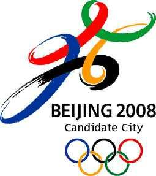
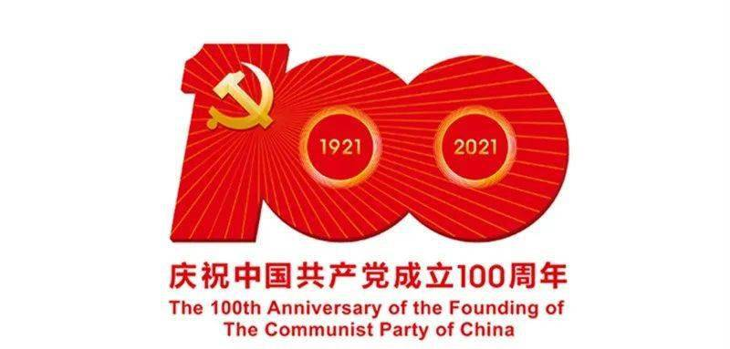

事件历程
●
●
●
事件介绍
-
1921中国共产党成立
1920年初，李大钊和陈独秀等人开始酝酿建党的问题。在共产国际代表的帮助下，上海、北京、武汉、广州、长沙、济南等地的先进知识分子，建立了党的早期组织。在法国和日本留学的青年学生，也成立了党的早期组织。 1921年7月23日，中国共产党第一次全国代表大会在上海举行。在会议进行过程中，突然有法租界巡捕闯进了会场，会议被迫中断。于是，最后一天的会议，便转到了浙江嘉兴南湖的一艘游船上举行。经过讨论，大会通过了中国共产党的第一个纲领和决议，并选举产生党的领导机构——中央局。党的一大宣告了中国共产党的正式成立。 -
1949新中国成立
中国共产党领导全国各族人民，推翻了压在人民头上的帝国主义、封建主义和官僚资本主义三座大山，取得新民主主义革命的胜利并建立了中华人民共和国， 从此，中国结束了一百多年来被侵略被奴役的屈辱历史，真正成为了独立自主的国家，中国人民从此站起来了，成为国家的主人。1949年10月9日在政协全国委员会第一次会议上，通过了由许广平代马叙伦（中国民主促进会主席）提出的以10月1日为 中华人民共和国国庆日的建议。 12月2日，中央人民政府委员会第四次会议采纳了这一建议，并作出正式决定。 -
1950抗美援朝
决策形成后，毛泽东和周恩来曾研究过以什么名义出兵的问题，并初步拟定了“支援军”的名义。黄炎培认为支援军，就是派出去的，容易让国际认为中国对美国宣战。因此改为中国人民志愿军，并使用了完全不同的番号， 表示不是中国跟美国宣战，是人民志愿支援朝鲜。
抗美援朝战争第一次战役 抗美援朝战争第二次战役 -
1964原子弹爆炸成功
在国家经济最困难的时候，远在新疆罗布泊的核试验基地更是雪上加霜。罗布泊本来植物就很稀少，可以吃的如榆树叶子沙枣树籽，甚至骆驼草，几乎都被他们拿来充饥了。 科研人员每天就餐后走出食堂都说还没吃饱，但一回到研究室就立刻开展工作。在一无图纸二无资料的情况下，科研人员用计算尺、算盘进行理论计算工作。饥饿难耐的时候，有的人拿酱油冲一杯汤，有的人冲一杯糖水。“加餐后”立刻又埋头科研工作。
主要任务：邓稼先 -

1978中国改革开放
1978年5月11日，《光明日报》头版发表特约评论员文章《实践是检验真理的唯一标准》，在全国范围内引发了一场关于真理标准问题的大讨论。在邓小平等老一辈无产阶级革命家的领导和支持下， 依靠理论界、新闻界和从事实际工作同志的紧密配合，这场讨论终于冲破“两个凡是”的束缚，为党的十一届三中全会重新确立马克思主义的思想路线作了理论和舆论上的准备，在党和国家的历史进程中产生了重大而深远的影响。 -
1997香港回归
香港回归（Hong Kong reunification）指1997年7月1日中华人民共和国政府对中国香港恢复行使主权的历史事件。 1982年9月26日，英国首相撒切尔夫人访华，中英首次揭开了香港前途谈判之幕。 双方在经过首次谈判后，声明表示将会通过外交途径对香港前途的解决方法进行商谈。第二阶段的谈判是1983年7月12及13日两天，地点在北京。 -
1999澳门回归
自1971年联合国大会2758号决议，中华人民共和国取得联合国合法席位后，便开始为香港与澳门的主权问题采取外交行动。时任国务院总理周恩来对此非常关注， 中国驻联合国代表黄华亦于1972年3月为此致函联合国非殖民地化委员会申明中国政府的立场：“香港和澳门是被英国、葡萄牙占领的中国领土, 同年11月8日，联合国大会通过了决议案，将香港和澳门于殖民地名单剔除，此举为中国和平解决香港与澳门的主权问题制造了有利的背景条件 -

-
2021年2月脱贫攻坚战
经过全党全国各族人民共同努力，在迎来中国共产党成立一百周年的重要时刻，我国脱贫攻坚战取得了全面胜利，现行标准下9899万农村贫困人口全部脱贫，832个贫困县全部摘帽，12.8万个贫困村全部出列，区域性整体贫困得到解决，完成了消除绝对贫困的艰巨任务，创造了又一个彪炳史册的人间奇迹！这是中国人民的伟大光荣，是中国共产党的伟大光荣，是中华民族的伟大光荣！ -
